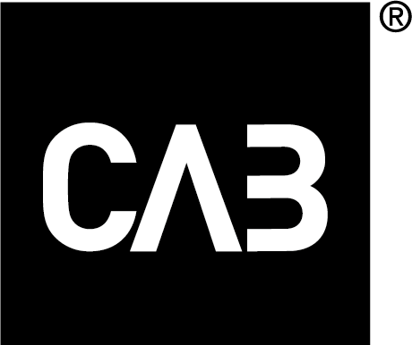
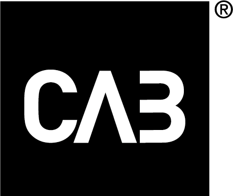

Talks
Cesario Ramos - Crafting an Agile framework that is uniquely yours
This talk invites you to explore the possibilities beyond the rigid and predefined frameworks. Discover how using axioms, principles, and guidelines can guide you to develop an Agile framework that fits with the unique dynamics of your organization. While Agile frameworks offer a foundational 'safety net' with well-defined rules, processes, and established roles to mitigate organizational design pitfalls, the challenge lies in navigating the number of options to find the perfect match. Yes, the better frameworks leave a lot of room to fill in the details and tailor it to your situation. But then the questions is: How to fill in the details? In this session, we will guide you through the journey of abandoning the one-size-fits-all approach. By focusing on your specific context and employing a set of foundational axioms, principles, and guidelines, you can evolve a framework that not only addresses your unique challenges but also enhances your team's agility and effectiveness.
Cesario Ramos
Guiding large and small scale Agile adoptions worldwide at different customers like Raiffeisenbank, Textkernel, ING, NN, Powerhouse, PANalytical, Thales, Adwise, Barco, Powerhouse, Reasult, Independer, de Amersfoortse, ASR, and Achmea. (co)author of the books: 'Creating Agile Organizations', ‘EMERGENT – Lean & Agile adoption for an innovative workplace’ and 'A Scrum Book'.
Martin Christensen - Holistic Product Discovery
One of the biggest problems with product development is that a great deal of what is built does not reach the intended impact. The most obvious reason for this is that one rarely focuses on building a product / service that meets the business goals, benefits from the technology AND provides a desired user experience at the same time. Let’s take a look at a possible approach to solve this called Continuous Collaborative Discovery & Delivery, or just Holistic Product Discovery for short.
Martin Christensen
Martin Christensen is a transformational coach based in Stockholm, Sweden. He is coaching and mentoring individuals, teams and organisations in Product Discovery and Delivery to help increase effectiveness of the products and motivation of the people, by taking a holistic approach. He’s been preaching Agile since around the conception of the manifesto, but his current love is in the domain of Adult Development Theory at houseofevolution.se.
Amanda Colliander - What Agile can learn from Lean Kata
How do you get to the elusive agile mindset and avoid fake agile? The lean community has brought forward Toyota Kata to address similar challenges within Lean. In this session you'll be introduced to Toyota Kata and ideas for using Kata for Agile.
Amanda Colliander
Amanda Colliander has worked as a leader within agile software development for many years and today works at Jeppesen a Boeing Company. She started using Lean Kata 8 years ago and has used it for improvements as well as coaching and 2nd coaching others during the years. She has spent the last years exploring how to use Kata for Agile and shared ideas both within the Agile and the Lean community.
Roland Flemm - Designing for Business Agility with Org Topologies™
The legacy of the original lightweight and barely sufficient Agile ideas (XP and Scrum) has been impeded by the difficulties of applying them beyond a single team without losing the key principles and the promised gains.
Over the last decade, that challenge has led to a rise in heavy- weight methods, especially SAFe™, which has become a go-to place for "everything agile". It provides the user with a profound variety of specific tools and techniques for "scaling agile”.
Org Topologies™ is a framework-agnostic approach that builds upon whatever you already have implemented. It will allow you to further develop your Agile ecosystems witha vector toward an org design where business and technology work as one to create true business agility.
Attendees will learn the language of Org Topologies™. They will acquire clarity on which organization ecosystem they want to build and which behaviors they expect it to exhibit.
Roland Flemm
Roland Flemm (PST) became a Scrum Master in 2009 closing his 20-year career as a developer and infrastructure specialist. Roland grew into international agile consulting with a focus on large scaled Scrum adoptions since 2015. He has been actively appearing in the Agile community as a conference speaker.
Roland Flemm is the creator of the Koos Coach agile comic series and created the "Elements of Scrum" Scrumcards a Scrum learning tool.
James Priest - Reclaiming the power of argumentation to connect and enlighten a divided world.
Eliminating unnecessary dependencies in organizations empowers individuals to decide and act for themselves. Doing so reduces waste, enhances productivity, and fosters a greater sense of ownership and responsibility. At the same time, when deciding how to deal with complex issues and unavoidable dependencies, involving stakeholders and others with a broad scope of knowledge and expertise is often essential for arriving at a good enough decision.
However, collaborative decision-making can be challenging. Disagreements are common, and failure to navigate them effectively can lead to ongoing conflict or people becoming unreasonable or disengaged.
Yet, any disagreement is a symptom of new information seeking emergence. Examining the reasons behind disputes will always reveal something valuable—whether a misunderstanding, a worthwhile improvement, or a way to avoid undesirable consequences or risks. In a world where we are simply not smart enough to navigate complexity alone, learning to harness the power of dissent and argumentation, being open to reason, and developing a nuanced point of view are crucial for building effective and resilient organizations and for dealing with many of the challenges we face in the world today.
This talk examines the unfortunate consequences of unresolved disagreements, why handling them can be so tricky, and lays out how to approach decision-making to bridge divides and maximize the chances of success.
James Priest
Co-founder and developer of Sociocracy 3.0, James spends his time helping people to learn how to better help themselves. Besides the development and delivery of learning journeys, he works with organizations to improve productivity and engagement, increase agility and grow resilient learning organizations where BOTH the people AND the organization can thrive.
Workshops
In addition to our usual conference we offer optional add-ons of intimate and interactive workshops with our keynote speakers.
Wednesday 27th November, Full day
Building Perfect Bridges through Collaboration
Everyone agrees that it is important to collaborate in an organisation, within a team, between teams, and between individuals. But rarely, there are good advice on how to do it. This one-day-workshop aims at creating great collaborators out of the participants by supplying them with the missing pieces of the collaboration puzzle.
Martin Christensen
Wednesday 27th November, Full day
Mastering Difficult Conversations
Essential communication skills to transform potential conflicts into mutually beneficial opportunities to learn and grow
Do you ever hesitate to initiate a conversation because you fear it might lead to conflict or ‘bad’ feelings?
Have you ever spoken up about something, and things didn’t go as well as you’d hoped?
Have you ever received feedback, a grievance, or a disagreement and felt uncertain about how to respond?
Lili David & James Priest
Wednesday 27th November, Half day
Kata to Grow
Do you want to learn a pattern for improvements by mindful and focused experimenting which ensures that you learn as much as possible from each experiment you try?
Kata to Grow is a playful introduction to the Improvement Kata.
Amanda Colliander
Wednesday 27th November, Full day
Agile Leadership and Organizational Design
As a leader, navigating your organization through the ever-changing demands of the market is day to day business. But, have you considered how the structure of your organization can either empower or impede your journey towards true agility?
Join us for a comprehensive 1-day workshop that will enrich your perspective on the role of organizational design in enhancing agility and aligning with your business objectives. Dive into the principles of Agile organization re-design and arm yourself with practical techniques that can be immediately applied within your organization to create an adaptabie organization.
Cesario Ramos
Friday 29th November, Full day
Designing Agile Ecosystems
Why you want to attend this workshop: Org Topologies™ is a framework-agnostic visual approach to communicate the direction of organizational development for digital product development and beyond.
Roland Flemm
Schedule
Please Note: The workshops and the conference are held in different locations!
Workshops on Wednesday, and Friday. Presentations, Open Space and evening mingle on Thursday.
A detailed programme will be published as soon as workshops have been finalized.
Sign up!
Sponsors
 

If you are interested in being a sponsor, mail: brewingagile@scrumbeers.com
Organizers
 Patrik Gustafsson
Rickard Lantz
Fredrik Wendt
Patrik Gustafsson
Rickard Lantz
Fredrik Wendt